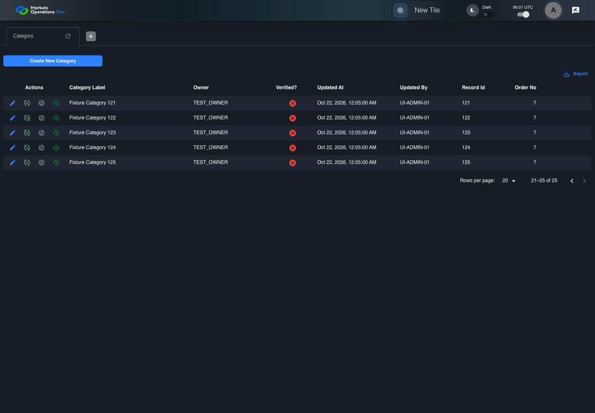

UI-ADM-GRD-003 actual administration UI with step evidence
PASS · application/run-050/ui-adm-grd-003-actual-administration-ui-with-step-evidence-8532f4f0fee8-attempt-1 · ACTUAL_APPLICATION_LOCAL_SERVICES
Actual current React administration screens. Controlled browser login supplies UI-ADMIN-01 and TEST_OWNER, or the declared SUPER_USER. Controlled BFF routes return the case-declared records. Other controlled saves persist submitted field values. This run establishes frontend handling only. It does not execute BFF validation, storage, audit generation, or authorization.
2026-10-22T06:01:13.571Z to 2026-10-22T06:01:17.000Z
Assertions and result · Artifact manifest · Exact run inputs and source hashes
Result SHA-256:9b359f19fe2e790e185984d4b7d6d94ffa31acc89ade9770f063d417abff86bfMachine observations
- source-resolved-pagination-target.json
2792afddaaed91ba893098b318ea0c9c35906944dab2b7e3bd8516f49d513934 - ui-origin-admin-requests.json
667948e9a4fc17ebf1e7628f86f6bfeb88eba8c91ec0738c7834ab134d734cf1
Screenshot capture: CAPTURED. Named frames: 10.
Step screenshot bindings: COMPLETE. 9/9 canonical steps have execution screenshots.
Bindings measure structural coverage only. They do not establish screenshot content quality or relevance.
Screenshot content review: NOT_REVIEWED. Recorded context: 0/10 frames. Identical image bytes: 6 repeated frames. Recorded context does not establish human visual review.
Canonical step timeline
Given Admin A is authenticated as fixture UI-ADMIN-01 with the case-specific permissions
Execution: PASSED.
1. step-01 Visible state after step 1: Given Admin A is authenticated as fixture UI-ADMIN-01 with the case-specific permissions
2026-10-22T06:01:14.634Z · 1440×1000
Step: /Users/lushevol/code/github/ratan-release-impact/workbench/tasks/ui-test-coverage-20261022/test-cases.md:9911
SHA-256:e2fecea69f4b5e4c51bcbaa02ec757835da891f94c1c5ab30ccdcdea7ec7548fAnd Category response contains records 101 through 125 in ascending ID order
Execution: PASSED.
2. step-02 Visible state after step 2: And Category response contains records 101 through 125 in ascending ID order
2026-10-22T06:01:15.617Z · 1440×1000
Step: /Users/lushevol/code/github/ratan-release-impact/workbench/tasks/ui-test-coverage-20261022/test-cases.md:9912
SHA-256:013ab910de17a34d4a83dbed6c9c910989701afb80f03b338e604e8d2b8008d4When Admin A clicks icon button with source identity "UNVERIFIED next-page target" inside the pagination footer of the Category administration data grid
Execution: PASSED.
3. step-03 Visible state after step 3: When Admin A clicks icon button with source identity "UNVERIFIED next-page target" inside the pagination footer of the Category administration data grid
2026-10-22T06:01:15.785Z · 1440×1000
Step: /Users/lushevol/code/github/ratan-release-impact/workbench/tasks/ui-test-coverage-20261022/test-cases.md:9913
SHA-256:f13e6fc62af4f3347757ae64b5d98b4d2399fa01acaf30705815c93907708a65Then row with source identity "121" inside the Category administration data grid is visible
Execution: PASSED.
4. step-04 Visible state after step 4: Then row with source identity "121" inside the Category administration data grid is visible
2026-10-22T06:01:15.885Z · 1440×1000
Step: /Users/lushevol/code/github/ratan-release-impact/workbench/tasks/ui-test-coverage-20261022/test-cases.md:9914
SHA-256:f13e6fc62af4f3347757ae64b5d98b4d2399fa01acaf30705815c93907708a65Image bytes match frame 3. An unchanged image can be valid for consecutive assertions. This match does not establish correct step content.
And row with source identity "122" inside the Category administration data grid is visible
Execution: PASSED.
5. step-05 Visible state after step 5: And row with source identity "122" inside the Category administration data grid is visible
2026-10-22T06:01:15.965Z · 1440×1000
Step: /Users/lushevol/code/github/ratan-release-impact/workbench/tasks/ui-test-coverage-20261022/test-cases.md:9915
SHA-256:f13e6fc62af4f3347757ae64b5d98b4d2399fa01acaf30705815c93907708a65Image bytes match frame 4. An unchanged image can be valid for consecutive assertions. This match does not establish correct step content.
And row with source identity "123" inside the Category administration data grid is visible
Execution: PASSED.
6. step-06 Visible state after step 6: And row with source identity "123" inside the Category administration data grid is visible
2026-10-22T06:01:16.046Z · 1440×1000
Step: /Users/lushevol/code/github/ratan-release-impact/workbench/tasks/ui-test-coverage-20261022/test-cases.md:9916
SHA-256:984bb348561a0981eafd52489babcc5f95e10129d8f02cce060851ec52d58342And row with source identity "124" inside the Category administration data grid is visible
Execution: PASSED.
7. step-07 Visible state after step 7: And row with source identity "124" inside the Category administration data grid is visible
2026-10-22T06:01:16.134Z · 1440×1000
Step: /Users/lushevol/code/github/ratan-release-impact/workbench/tasks/ui-test-coverage-20261022/test-cases.md:9917
SHA-256:984bb348561a0981eafd52489babcc5f95e10129d8f02cce060851ec52d58342Image bytes match frame 6. An unchanged image can be valid for consecutive assertions. This match does not establish correct step content.
And row with source identity "125" inside the Category administration data grid is visible
Execution: PASSED.
8. step-08 Visible state after step 8: And row with source identity "125" inside the Category administration data grid is visible
2026-10-22T06:01:16.215Z · 1440×1000
Step: /Users/lushevol/code/github/ratan-release-impact/workbench/tasks/ui-test-coverage-20261022/test-cases.md:9918
SHA-256:984bb348561a0981eafd52489babcc5f95e10129d8f02cce060851ec52d58342Image bytes match frame 7. An unchanged image can be valid for consecutive assertions. This match does not establish correct step content.
And the current page of data grid with source identity "administration records" inside the "Category" administration tabpanel contains exactly 5 data records
Execution: PASSED.
9. step-09 Visible state after step 9: And the current page of data grid with source identity "administration records" inside the "Category" administration tabpanel contains exactly 5 data records
2026-10-22T06:01:16.309Z · 1440×1000
Step: /Users/lushevol/code/github/ratan-release-impact/workbench/tasks/ui-test-coverage-20261022/test-cases.md:9919
SHA-256:984bb348561a0981eafd52489babcc5f95e10129d8f02cce060851ec52d58342Image bytes match frame 8. An unchanged image can be valid for consecutive assertions. This match does not establish correct step content.
Additional named frames

The final visible state after the named test assertions.
2026-10-22T06:01:16.470Z · 1440×1000Step: Test source: /Users/lushevol/code/github/ratan-release-impact/workbench/e2e/audit-specs/admin-expanded.spec.ts:15
SHA-256:
984bb348561a0981eafd52489babcc5f95e10129d8f02cce060851ec52d58342Image bytes match frame 9. An unchanged image can be valid for consecutive assertions. This match does not establish correct step content.
Screenshots establish visible state only. Assertions and traces support functional claims.